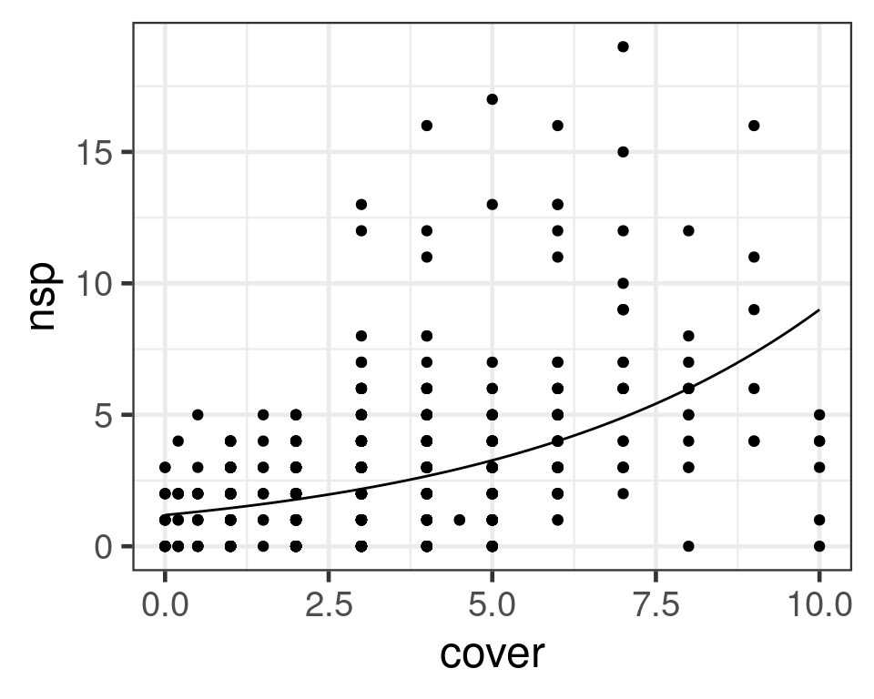

Bio302 - Biological data analysis II
Department of Biology, University of Bergen
April 2024
Count data, binomial and proportion data do not have normally distributed errors
\(y_i = \beta_0 + \beta_1x_i + \epsilon_i\)
Find \(\beta_0\) and \(\beta_1\) that minimise \(\sum\epsilon ^ 2\)
How likely are the data given the model? – choose coefficients to maximise likelihood
Residuals come from a distribution
Normal distribution: \(L(y;\mu,\sigma) = \frac{1}{\sigma \sqrt {2\pi } }e^{-\frac{(x - \mu)^2} {{2\sigma ^2 }}}\)
For each observation find the likelihood
Find the product of the likelihoods (fails)
Find the sum of the log-likelihoods
\(\sum{(IL(y;μ,σ))} = {log}(\prod{L(y;μ,σ)})\)
Get model with maximum log-likelihood
Deviance is a measure of goodness-of-fit (equivalent to \(\sum{\epsilon ^2}\))
\(y_i = β_0~ + β_1x_i + ε_i\)
\(g(E(y_i)) = β_0 + β_1x_i\)
Normal (gaussian)
Poisson
Binomial
Success = 1 & Failure = 0
n = trials
\(p\) = probability of success
\((1 - p)\) = probability of failure
\(μ = np\)
\(var(y) = np(1 - p)\)
Suggest some types of data that you would expect to follow a binomial distribution
Use logistic link:
\(log(\frac{p}{1 - p}) = \beta_0~ + \beta_1x_i\)
\(p = \frac{exp(β_0 + β_1x_i)} {1 + exp(β_0 + β_1x_i)}\)
Response = Survival (i.e. success)
Predictor = temperature
y is
Call:
glm(formula = surv ~ temp, family = binomial, data = surv)
Coefficients:
Estimate Std. Error z value Pr(>|z|)
(Intercept) -5.02708 1.39940 -3.592 0.000328 ***
temp 0.18957 0.05026 3.772 0.000162 ***
---
Signif. codes: 0 '***' 0.001 '**' 0.01 '*' 0.05 '.' 0.1 ' ' 1
(Dispersion parameter for binomial family taken to be 1)
Null deviance: 69.235 on 49 degrees of freedom
Residual deviance: 33.454 on 48 degrees of freedom
AIC: 37.454
Number of Fisher Scoring iterations: 6Response:
\(p = \frac{exp(β_0 + β_1x_i)} { 1 + exp(β_0 + β_1x_i)}\)
Predictor perfectly separates zeroes and ones in response
Very high coefficient
Very large uncertainty
brglmbayesglm in arm package, rstany = discrete (counts)
x = predictor
\(mean = \mu\)
\(var(y) = \mu\)
\(log(\mu) = β_0 + β_1x_i\)
Shape depends on lambda
With large values of lambda, normal approximation is possible
Suggest some data types that are Poisson distributed
'data.frame': 692 obs. of 3 variables:
$ cover : num 0 0 0 0 0 0 0 0 0 0.2 ...
$ nsp : int 2 1 1 3 1 3 2 1 0 2 ...
$ grasherb: int 0 0 0 0 0 0 0 0 0 0 ...Predictor is cover
Response is number of species
Analysis of Deviance Table
Model: poisson, link: log
Response: nsp
Terms added sequentially (first to last)
Df Deviance Resid. Df Resid. Dev Pr(>Chi)
NULL 691 1660.9
cover 1 345.95 690 1315.0 < 2.2e-16 ***
---
Signif. codes: 0 '***' 0.001 '**' 0.01 '*' 0.05 '.' 0.1 ' ' 1
Call:
glm(formula = nsp ~ cover, family = poisson, data = rich)
Coefficients:
Estimate Std. Error z value Pr(>|z|)
(Intercept) 0.17097 0.04931 3.467 0.000526 ***
cover 0.20263 0.01037 19.541 < 2e-16 ***
---
Signif. codes: 0 '***' 0.001 '**' 0.01 '*' 0.05 '.' 0.1 ' ' 1
(Dispersion parameter for poisson family taken to be 1)
Null deviance: 1660.9 on 691 degrees of freedom
Residual deviance: 1315.0 on 690 degrees of freedom
AIC: 2869.1
Number of Fisher Scoring iterations: 5log(μ) = β0 + β1xi
Variance in Binomial and Poisson models is specified:
Real data can have more (or less) variance than this if not drawn from a pure Binomial or Poisson process.
Overdispersion if Residual deviance > residual df
Analysis of Deviance Table
Model: poisson, link: log
Response: nsp
Terms added sequentially (first to last)
Df Deviance Resid. Df Resid. Dev
NULL 691 1660.9
cover 1 345.95 690 1315.0# Overdispersion test
dispersion ratio = 1.910
Pearson's Chi-Squared = 1317.745
p-value = < 0.001What is it:
When:
What to do:
Find missing parameters
Quasi-likelihood:
Negative binomial - counts
Beta-binomial - proportion data
Individual level random effects
Zero-inflated distributions
Hurdle models
Poisson: \(var(y) = μ\)
Quasipoisson: \(var(y) = \phi\mu\)
Scale parameter \(\phi\) modifies relationship between mean and variance
Fitted model will be the same
Confidence intervals will be wider
P values will be higher
No AIC for model selection. Quasi-AIC?
Discrete probability distribution - number of successes in a sequence of independent and identically distributed Bernoulli trials before a specified number of failures occurs.
Two parameters:
Implemented in package MASS
# A tibble: 2 × 5
term estimate std.error statistic p.value
<chr> <dbl> <dbl> <dbl> <dbl>
1 (Intercept) 0.132 0.0666 1.98 4.80e- 2
2 cover 0.213 0.0157 13.6 5.44e-42Has AIC
Fit a mixed effect model when the random effect is each individual
library("lme4")
rich <- rich |> mutate(id = 1:n())
fit_mx <- glmer(nsp ~ cover + (1 | id), data = rich, family = poisson)
broom.mixed::tidy(fit_mx)# A tibble: 3 × 7
effect group term estimate std.error statistic p.value
<chr> <chr> <chr> <dbl> <dbl> <dbl> <dbl>
1 fixed <NA> (Intercept) -0.00478 0.0695 -0.0688 9.45e- 1
2 fixed <NA> cover 0.209 0.0159 13.2 1.58e-39
3 ran_pars id sd__(Intercept) 0.547 NA NA NA Used to model count data that has an excess of zero counts.
Two component models
Fit with package pscl function zeroinfl()
Counts are rates with uneven amount of time (or area)
Double the time \(\approx\) double the count - coefficient known to be 1
\[log(\frac{\mu_i}{t_i}) = \beta_0 + \beta_1x\] \[log(\mu_i) - log(t_i) = \beta_0 + \beta_1x\] \[log(\mu_i) = \beta_0 + \beta_1x) + \beta_2 \times log(t_i) \]
# glm with offset
glm(Claims ~ District + Group + Age + offset(log(Holders)),
family=poisson, data=Insurance)
Call: glm(formula = Claims ~ District + Group + Age + offset(log(Holders)),
family = poisson, data = Insurance)
Coefficients:
(Intercept) District2 District3 District4 Group.L Group.Q
-1.810508 0.025868 0.038524 0.234205 0.429708 0.004632
Group.C Age.L Age.Q Age.C
-0.029294 -0.394432 -0.000355 -0.016737
Degrees of Freedom: 63 Total (i.e. Null); 54 Residual
Null Deviance: 236.3
Residual Deviance: 51.42 AIC: 388.7By default, predictions are on linear-predictor scale
fit_glm <- glm(nsp ~ cover, data = rich, family = poisson)
(pred <- predict(fit_glm, newdata = data.frame(cover = 10))) 1
2.197233 Transform with inverse of link to put on to response scale
Poisson uses log link
\(log(\mu) = \beta_0 + \beta_1x_i\)
Use exponential function
Or ask for predictions on reponse scale
Link scale (linear predictor scale)
Response scale (linear predictor scale)
Estimate \(\mu\) and SE on link scale {\(log(\mu)\) & SE}
Estimate confidence interval (\(\mu ± 2*SE\))
Use link-function to obtain values on ‘response scale’ {\(exp(\mu ± 2*SE)\)}
Link scale (linear predictor scale)
Response scale (linear predictor scale)
Analogous to calculation for Poisson
Use Logistic link function
\(log(\frac{p}{1-p})= β_0 + β_1x_i\)
\(p = \frac{exp(β_0 + β_1x_i)} {1 + exp(β_0 + β_1x_i)}\)
Normal
Poisson
Binomial
Gamma
Log normal
family = gaussian(link = "log")Assume smooth response to predictor
Data-driven
Don’t know what reponse should be
Exploration of data
Can take any distribution and link function available for GLM
Smooth terms
Complexity of smooth terms estimated using Generalised cross-validation
Omit the smooth term and get a GLM!
lot more on GAMs at https://github.com/gavinsimpson/adelaide-2017/blob/master/02-tuesday/02-gams.pdf
Try the course on Generalised Additive Models in R at https://noamross.github.io/gams-in-r-course/
pot <- read.csv("practicals/data/pot.csv")
library(mgcv)
mod <- gam(potalp ~ s(alt), data = pot, family = binomial)
mod2 <- gam(potalp ~ alt + I(alt^2), data = pot, family = binomial)
anova(mod, mod2, test = "Chisq")Analysis of Deviance Table
Model 1: potalp ~ s(alt)
Model 2: potalp ~ alt + I(alt^2)
Resid. Df Resid. Dev Df Deviance Pr(>Chi)
1 564.97 525.35
2 568.00 529.28 -3.0331 -3.9306 0.2737